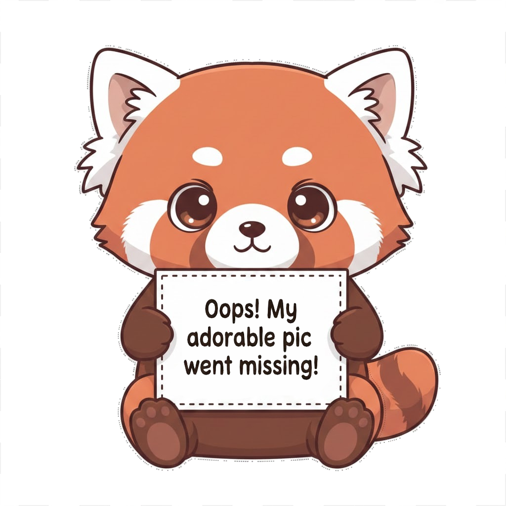

[Species Common Name]
[Species Scientific Name]

[Species Visual Description]
Critter Info
Habitat
[Species Habitat]
Diet
[Species Diet]
Behavior
[Species Behavior]
Conservation Status
[Species Conservation Status]